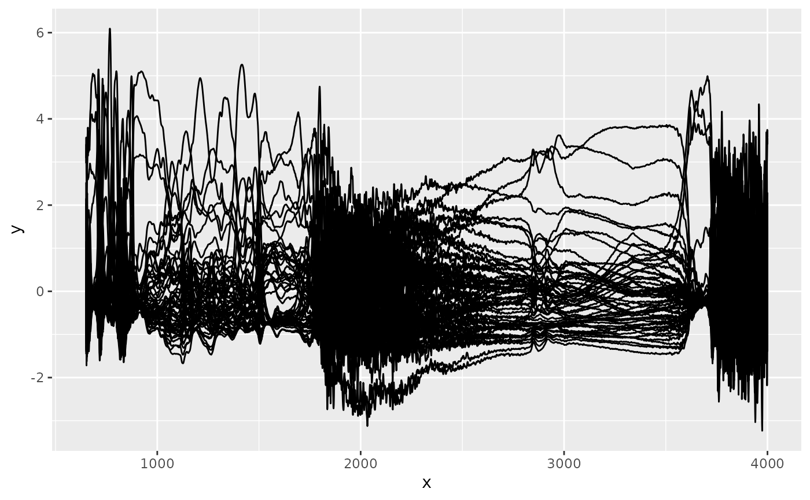

Scales spectra in an ir object
Arguments
- x
An object of class
ir, where all non-empty spectra have identical wavenumber values.- center
either a logical value or numeric-alike vector of length equal to the number of columns of
x, where ‘numeric-alike’ means thatas.numeric(.)will be applied successfully ifis.numeric(.)is not true.- scale
either a logical value or a numeric-alike vector of length equal to the number of columns of
x.- return_ir_flat
Logical value. If
TRUE, the spectra are returned asir_flatobject.
Value
x where spectra have been scaled, i.e. from each intensity value,
the average across all spectra is subtracted (when center is a logical
value), or the respective value in center is subtracted (when center is
numerical), and each intensity value is divided by the standard deviation of
the intensity values at this wavenumber across all spectra (when scale is a
logical value), or the respective value in scale (when scale is
numerical). NAs are omitted during this process.
Examples
ir_sample_data |>
ir_scale() |>
plot()
